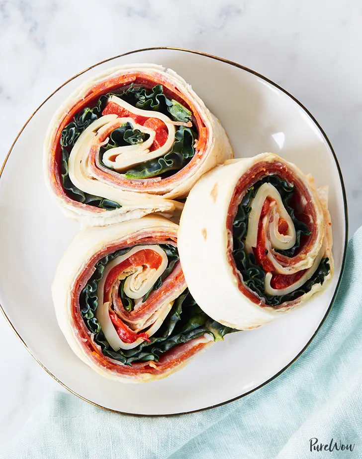

Italian Deli Pinwheel Sandwiches

Description
This simple recipe adds a twist to your average deli sandwhiches by putting them in a pinwheel form. The quick prep time will have you looking forward to lunch all morning.
Ingredients
- 3 tablespoons mayonnaise
- 3 tablespoons Dijon mustard
- 3 large flour tortillas
- 8 ounces sliced Genoa salami
- 8 ounces sliced pepperoni
- 8 ounces sliced prosciutto
- 6 large lacinato kale leaves, stems removed
- 8 ounces sliced provolone cheese
- 8 ounces roasted red peppers
Steps
- In a small bowl, mix together the mayonnaise and mustard. Heat a large skillet over medium heat. Lightly toast each tortilla in the skillet until it's more flexible.
- Spread 2 tablespoons of the mayonnaise mixture evenly over each tortilla.
- Evenly layer the salami, pepperoni, prosciutto, kale, cheese, and peppers on each tortilla.
- Tightly roll each tortilla into a spiral; chill for 15 minutes.
- Slice the rolls into 2-inch-thick pinwheels. Serve immediately or wrap tightly and refrigerate for up to a day before serving.